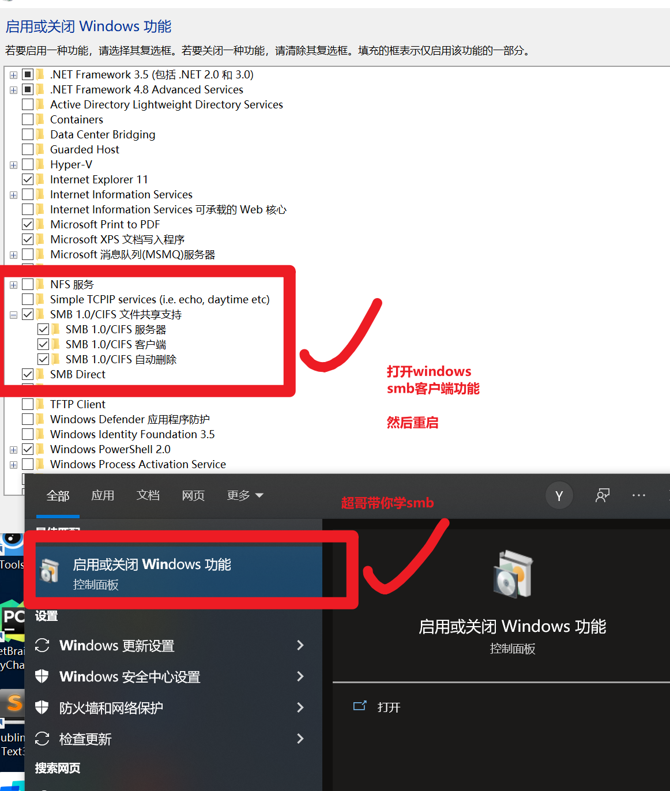
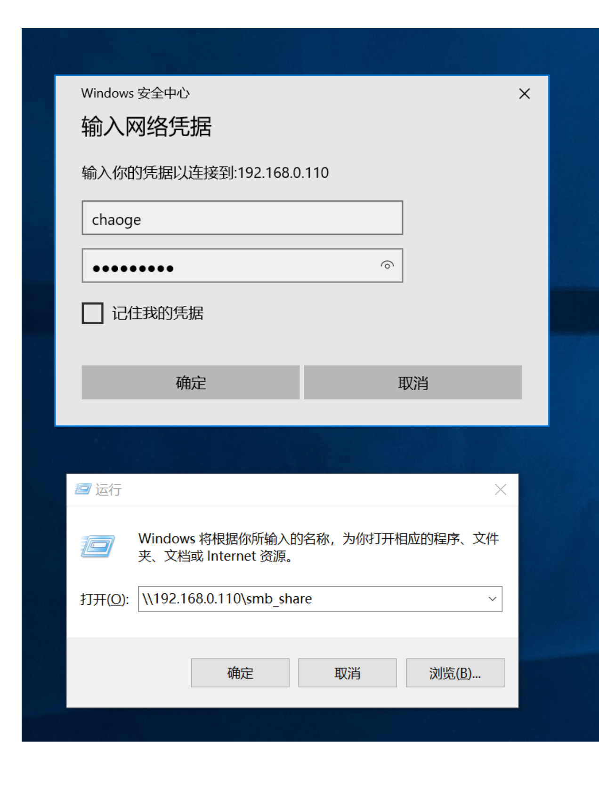
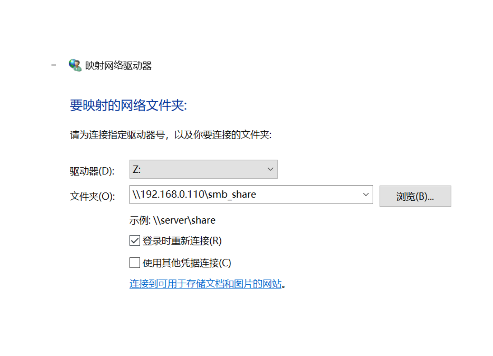
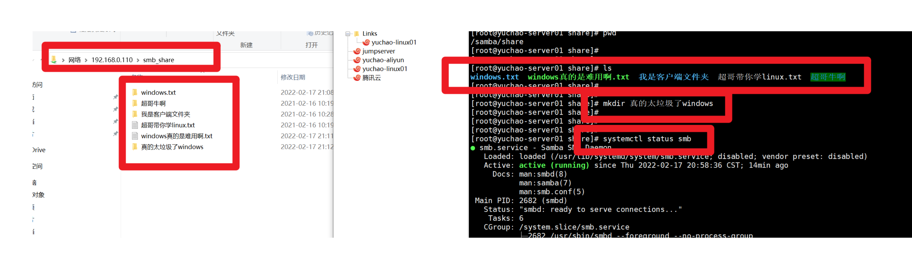

3-7-文件共享服务之Samba
samba是什么
我们所了解过的FTP文件传输，的确可以让不同主机之间进行文件传输，此方式特点是传输文件，用户想要在客户端直接修改服务器的数据，还是较为麻烦。
既然如此，Linux上有一款应用叫做Samba，是一个能让Linux系统应用微软网络通讯协议的软件。
微软为了解决局域网的文件共享，制定了SMB协议，也就是（Server Messages Block，服务器消息块），后来SMB通信协议应用到了Linux系统上，就形成了现在的Samba软件。
- Samba最大的功能就是可以用于Linux与windows系统直接的文件共享和打印共享
- Samba既可以用于windows与Linux之间的文件共享
- 也可以用于Linux与Linux之间的资源共享
- 由于NFS(网络文件系统）可以很好的完成Linux与Linux之间的数据共享
- 因而 Samba较多的用在了Linux与windows之间的数据共享上面。
Samba服务的主要进程
- smbd进程 控制发布共享目录与权限、==负责文件传输== ==TCP 139， 445==
samba服务器配置信息
1.软件安装
[root@yuchao-server01 ~]# yum install samba -y
2.检查安装了哪些samba相关软件
[root@yuchao-server01 ~]# rpm -qa |grep ^samba
samba-common-libs-4.10.16-18.el7_9.x86_64
samba-common-4.10.16-18.el7_9.noarch
samba-client-libs-4.10.16-18.el7_9.x86_64
samba-4.10.16-18.el7_9.x86_64
samba-common-tools-4.10.16-18.el7_9.x86_64
samba-client-4.10.16-18.el7_9.x86_64
samba-libs-4.10.16-18.el7_9.x86_64
3.配置文件查看
[root@yuchao-server01 ~]# ls /etc/samba/
lmhosts smb.conf smb.conf.example
smb.sonf.example配置样例文件，里面有关于配置Samba服务器样例
smb的配置文件，主要分为全局配置和共享配置
- [global] 全局
- 共享
- [home]
- [printers]
默认smb.conf
/etc/samba/smb.conf
[global] 全局选项
workgroup = MYGROUP 定义samba服务器所在的工作组
server string = Samba Server Version %v smb服务的描述
log file = /var/log/samba/log.%m 日志文件
max log size = 50 日志的最大大小KB
security = user 认证模式：share匿名|user用户密码|server外部服务器用户密码
passdb backend = tdbsam 密码格式
load printers = yes 加载打印机
cups options = raw 打印机选项
[homes] 局部选项（共享名称）
comment = Home Directories 描述
browseable = no 隐藏共享名称
writable = yes 可读可写
[printers] 共享名称
comment = All Printers 描述
path = /var/spool/samba 本地的共享目录
browseable = no 隐藏
guest ok = no ——> public = no 需要帐号和密码访问
writable = no ——> read only =yes 不可写
printable = yes 打印选项
[share]
path = /dir1
guest ok = no
writable = yes
global配置参数详解
workgroup = MYGROUP
Samba服务器加入的工作组名，一个局域网内，必须有相同的工作组名。
server string = Samba Server Version %v
Samba服务器注释，可以不选，%v代表显示Samba版本号
netbios name = samba
主机NetBIOS名
netbios name = samba
主机NetBIOS名
interfaces = lo eth0
设置Samba服务器端监听网卡，可以写网卡名称或者IP地址
hosts allow/deny = 10.10.10.1
允许连接到Samba server客户端IP，多个参数用空格分开。可以用一个IP表示，也可以用一个网段表示。
max connections = 0
用来指定连接Samba server服务器最大连接数如果操作则连接请求被拒绝。0表示不限制。
deadtime = 0
来设置断掉一个没有任何文件的链接时间。单位十分钟，0代表Samba server不自动断开任何连接
time server = yes/no
用来设置让nmdb成为Windows客户端的时间服务器
log file = /var/log/samba/%m.log
设置Samba server日志文件存储位置和日志名称。文件后面加一个%m（主机名），每个主机都会有一个主机名.log日志文件
max log size = 50
限制每个日志文件的最大容量为50KB，0代表不限制
Security = user
设置客户端访问Samba服务器的验证方式，Samba4版本已经不使用share和server方式，这里不介绍
1) user:Samba用户名和密码登录
2) domain：添加Samba服务器到N域，由NT与控制起来进行身份验证。域安全级别，使用主域控制器（PDC）来完成认证
passdb backend = tdbsam
后台管理用户密码方式
1）smbpasswd：该方式是使用smb自己的工具smbpasswd来给系统用户
2）tdbsam：该方式则是使用一个数据库文件来建立用户数据库。
3）ldapsam：该方式则是基于LDAP的账户管理方式来验证用户。
smb passwd file = /etc/samba/smbpasswd
用来定义samba用户的密码文件。smbpasswd文件如果没有那就要手工新建。
username map = /etc/samba/smbusers
用来定义用户名映射，比如可以将root换administrator、admin等。
guest account = nobody
用来设置guest用户名。
socket options = TCP_NODELAY SO_RCVBUF=8192 SO_SNDBUF=8192
用来设置服务器和客户端之间会话的Socket选项，可以优化传输速度
load printers = yes/no
设置是否在启动Samba时就共享打印机。
共享配置参数详解
comment = 任意字符串
comment是对该共享的描述，可以是任意字符串。
browseable = yes/no
browseable用来指定该共享是否可以浏览。
path = 共享目录路径
path用来指定共享目录的路径。
writable = yes/no
用来指定该共享路径是否可写
invalid users = 禁止访问该共享的用户
invalid users用来指定不允许访问该共享资源的用户。
例如：invalid users = root，@bob（多个用户或者组中间用逗号隔开。）
public = yes/no
用来指定该共享是否允许guest账户访问。
guest ok = yes/no
用来指定该共享是否允许guest账户访问。
samba共享任务
现在需要在linux中共享一个目录/samba/share/，提供给他人访问数据，可以是windows客户端、也可以是linux，客户可以访问该目录，修改目录数据。
samba的配置文件，全局配置参数是针对整体的资源共享设置，生效于每一个独立的共享资源。
区域配置参数可以设置单独的共享资源，仅仅对该资源有效。
1.samba服务端、软件部署三部曲
关闭防火墙
配置好yum源
安装samba
安装
[root@yuchao-server01 ~]# yum install samba -y
检查
[root@yuchao-server01 ~]# rpm -qa |grep ^samba
samba-common-libs-4.10.16-18.el7_9.x86_64
samba-common-4.10.16-18.el7_9.noarch
samba-client-libs-4.10.16-18.el7_9.x86_64
samba-4.10.16-18.el7_9.x86_64
samba-common-tools-4.10.16-18.el7_9.x86_64
samba-client-4.10.16-18.el7_9.x86_64
samba-libs-4.10.16-18.el7_9.x86_64
2.查看samba软件需要用到的命令
[root@yuchao-server01 ~]# rpm -ql samba |grep sbin
/usr/sbin/eventlogadm
/usr/sbin/nmbd
/usr/sbin/smbd
3.查看smb需要用的配置文件
[root@yuchao-server01 ~]# ls /etc/samba/
lmhosts smb.conf smb.conf.example
4.根据需求，创建共享文件夹
[root@yuchao-server01 ~]# mkdir -p /samba/share
5.修改smb配置文件，共享该目录，加入如下配置
[root@yuchao-server01 ~]# tail -7 /etc/samba/smb.conf
[smb_share]
comment=yuchao share dir
path = /samba/share
guest ok=no
public = no
writable = yes
pdbedit命令
注意公共的samba配置参数，密码认证是 tdbsam，用一个额外的数据库来管理samba的用户，密码等。 pdbedit命令用于管理存储在sam数据库中的用户账户，只能由root运行。
命令语法
pdbedit -a username：新建Samba账户。
pdbedit -r username：修改Samba账户。
pdbedit -x username：删除Samba账户。
pdbedit -u, --user=USER use username
pdbedit -L：列出Samba用户列表，读取passdb.tdb数据库文件。
pdbedit -Lv：列出Samba用户列表详细信息。
pdbedit -c “[D]” -u username：暂停该Samba用户账号。
pdbedit -c “[]” -u username：恢复该Samba用户账号。
创建用于访问samba共享资源的账户信息
注意samba创建的用户数据库必须在当前系统中存在
[root@yuchao-server01 ~]# id chaoge
uid=1001(chaoge) gid=1001(chaoge) 组=1001(chaoge)
账号chaoge，密码chaoge666
[root@yuchao-server01 ~]# pdbedit -a -u chaoge
new password:
retype new password:
Unix username: chaoge
NT username:
Account Flags: [U ]
User SID: S-1-5-21-3229617238-3252898863-1660067732-1000
Primary Group SID: S-1-5-21-3229617238-3252898863-1660067732-513
Full Name:
Home Directory: \\yuchao-server01\chaoge
HomeDir Drive:
Logon Script:
Profile Path: \\yuchao-server01\chaoge\profile
Domain: YUCHAO-SERVER01
Account desc:
Workstations:
Munged dial:
Logon time: 0
Logoff time: 三, 06 2月 2036 23:06:39 CST
Kickoff time: 三, 06 2月 2036 23:06:39 CST
Password last set: 二, 16 2月 2021 10:11:16 CST
Password can change: 二, 16 2月 2021 10:11:16 CST
Password must change: never
Last bad password : 0
Bad password count : 0
Logon hours : FFFFFFFFFFFFFFFFFFFFFFFFFFFFFFFFFFFFFFFFFF
[root@yuchao-server01 ~]#
查看samba用户
[root@yuchao-server01 ~]# pdbedit -L
chaoge:1001:
此时检查用于共享的资源目录，注意权限
[root@yuchao-server01 ~]# chown -R chaoge.chaoge /samba/
[root@yuchao-server01 ~]#
[root@yuchao-server01 ~]# ls -ld /samba/share/
drwx-wx-wx 2 chaoge chaoge 6 2月 16 09:50 /samba/share/
[root@yuchao-server01 ~]#
[root@yuchao-server01 ~]# chmod -R 777 /samba/
[root@yuchao-server01 ~]#
[root@yuchao-server01 ~]# ls -ld /samba/share/
drwxrwxrwx 2 chaoge chaoge 6 2月 16 09:50 /samba/share/
启动samba服务
[root@yuchao-server01 ~]# netstat -tnlp|grep smb
tcp 0 0 0.0.0.0:445 0.0.0.0:* LISTEN 62603/smbd
tcp 0 0 0.0.0.0:139 0.0.0.0:* LISTEN 62603/smbd
tcp6 0 0 :::445 :::* LISTEN 62603/smbd
tcp6 0 0 :::139 :::* LISTEN 62603/smbd
测试smb共享
linux之间
smbclient
smbclient命令属于samba套件，它提供一种命令行使用交互式方式访问samba服务器的共享资源。
-L：显示服务器端所分享出来的所有资源；
-U<用户名称>：指定用户名称；
-c 执行samba命令
查看smb共享了啥
[root@yuchao-client01 ~]# smbclient -L 192.168.0.110 -U chaoge
Enter SAMBA\chaoge's password:
Sharename Type Comment
--------- ---- -------
print$ Disk Printer Drivers
smb_share Disk yuchao share dir
IPC$ IPC IPC Service (Samba 4.10.16)
chaoge Disk Home Directories
Reconnecting with SMB1 for workgroup listing.
Server Comment
--------- -------
Workgroup Master
--------- -------
[root@yuchao-client01 ~]#
直接访问smb共享目录
[root@yuchao-client01 ~]# smbclient //192.168.0.110/smb_share -U chaoge
Enter SAMBA\chaoge's password:
Try "help" to get a list of possible commands.
smb: \> ls
. D 0 Tue Feb 16 10:19:33 2021
.. D 0 Tue Feb 16 09:50:06 2021
超哥牛啊 D 0 Tue Feb 16 10:19:22 2021
超哥带你学linux.txt N 0 Tue Feb 16 10:19:33 2021
46110724 blocks of size 1024. 39359772 blocks available
创建文件夹
smb: \>
smb: \> mkdir 我是客户端文件夹
查看所有支持的命令功能。
smb: \> ?
? allinfo altname archive backup
blocksize cancel case_sensitive cd chmod
chown close del deltree dir
du echo exit get getfacl
geteas hardlink help history iosize
lcd link lock lowercase ls
l mask md mget mkdir
more mput newer notify open
posix posix_encrypt posix_open posix_mkdir posix_rmdir
posix_unlink posix_whoami print prompt put
pwd q queue quit readlink
rd recurse reget rename reput
rm rmdir showacls setea setmode
scopy stat symlink tar tarmode
timeout translate unlock volume vuid
wdel logon listconnect showconnect tcon
tdis tid utimes logoff ..
!
linux和windows共享文件
1.首先打开windows下的smb功能，然后重启windows

访问linux的共享文件夹。
可能会遇见网络问题，延迟特别高，难以连接上smb。
2.访问smb的方式


3.正确连接到smb之后，两边可以共享数据了

samba是用于在局域网内，实现linux+windows之间的共享服务，我们在生产环境下，更多的还是学习NFS服务，实现linux之间的文件共享，网站架构必备NFS。